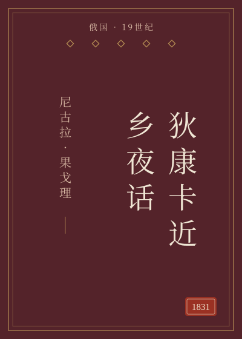
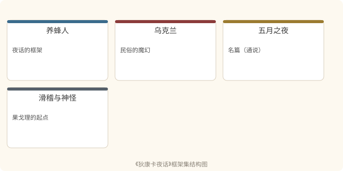

狄康卡近乡夜话
一、基本信息
| 作者 | 果戈理 |
|---|---|
| 成书/出版 | 1831—1832年（作者页 B140 口径：狄康卡近乡夜话（1831—32）） Nikolay Gogol — Encyclopaedia Britannica（百科全书） |
| 国别/地区 | 俄国 |
| 时代 | 近代 · 19世纪 |
| 体裁 | 短篇故事集 |
| 语言 | 俄语 |

《狄康卡夜话》框架集结构图（主题·结构图）
二、创作背景
作者页（B140）：果戈理 major_works 载'狄康卡近乡夜话（1831—32）'——其成名之作（B140 作者页定位，详见 sihunling 条核对）。
体裁（通说）：乌克兰民间故事的框架集——养蜂人鲁第·潘柯的夜话。
三、内容脉络
上下两卷：集民间传说、神怪与滑稽故事（通说待核）。
《五月之夜》《圣诞节前夜》等名篇（通说待核）。
四、主要人物表
| 人物 | 身份 | 说明 |
|---|---|---|
| 养蜂人鲁第·潘柯 | 框架叙述者 | （通说待核） |
五、主题与艺术特点
- 乌克兰民俗的魔幻呈现（通说）。
- 果戈理幽默的起点（通说）。
- 框架叙事（通说待核）。
六、影响与评论
- 作者页：果戈理成名作（B140 作者页口径）。
Nikolay Gogol — Encyclopaedia Britannica（百科全书） - 普希金的赞赏（'令人惊异的书'说——通说待核）。
Nikolay Gogol — Encyclopaedia Britannica（百科全书）
七、阅读建议
难点
- 乌克兰语词与民俗。
- 框架与嵌套。
- 《狄康卡近乡夜话》（人民文学出版社，通说待核）。
- 俄文原版（公有领域）。
先《夜话》后《外套》《死魂灵》。
八、待核实
- 两卷出版（1831/1832说）核对。
- 鲁第·潘柯名核对。
- 普希金评语出处待核。
本页主要来源
果戈理的其他收录作品：死魂灵